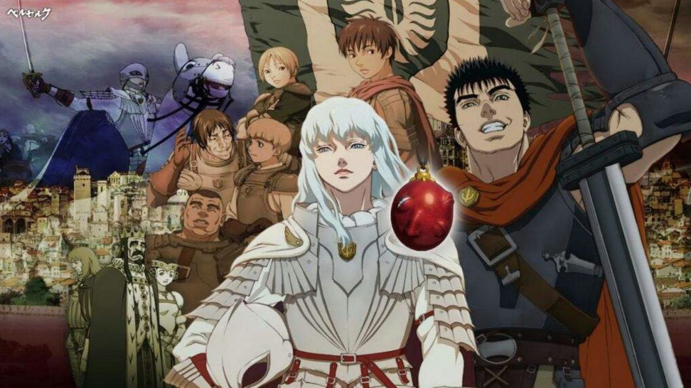

Berserk (ベルセルク?) es un manga creado por Kentaro Miura y posteriormente adaptado en anime, con un estilo épico fantástico y de fantasía oscura. El manga comenzó a publicarse en 1989 en la extinta revista mensual Monthly Animal House, hasta que fue reemplazada en 1992 por la revista quincenal Young Animal, donde fue publicado irregularmente hasta el 2021 tras la muerte de su autor.
La historia está ambientada en una época con tintes de la Europa medieval y renacentista, en la cual se cuenta la vida de Guts, un mercenario huérfano que acompañado del elfo Puck, caza seres demoníacos llamados apóstoles. La historia se divide en dos partes: la primera (que va del volumen 4 al volumen 13) relata su niñez y juventud hasta cómo conoce a Griffith, líder de un grupo mercenario llamado la «Banda del Halcón». La segunda parte (volúmenes del 1 al 3 y 14 al 41, publicándose) muestra su historia tras el fatídico Eclipse, la caza de los apóstoles y su búsqueda de venganza contra Griffith.
